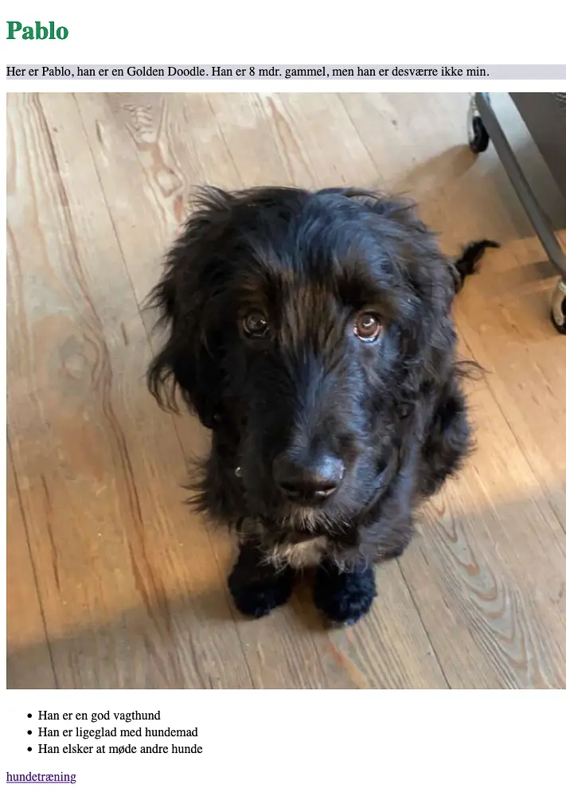
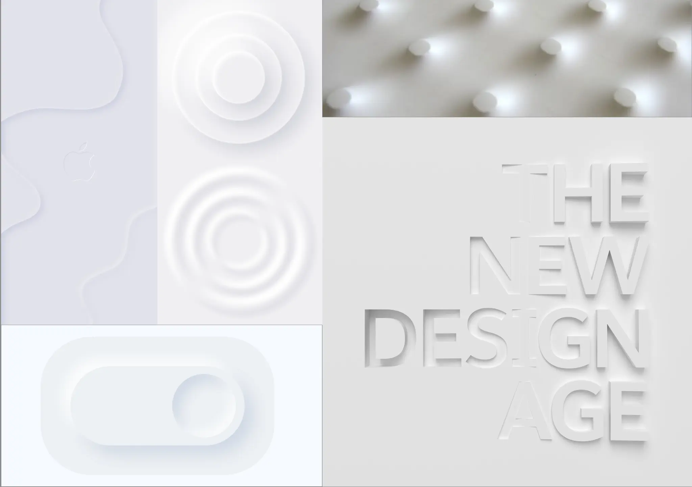
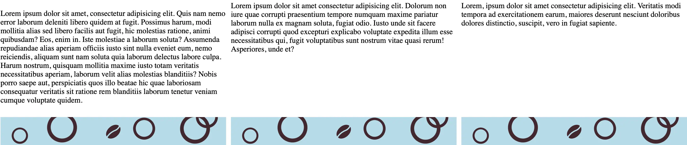
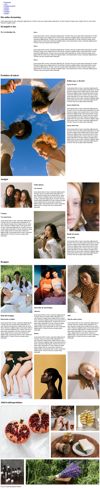
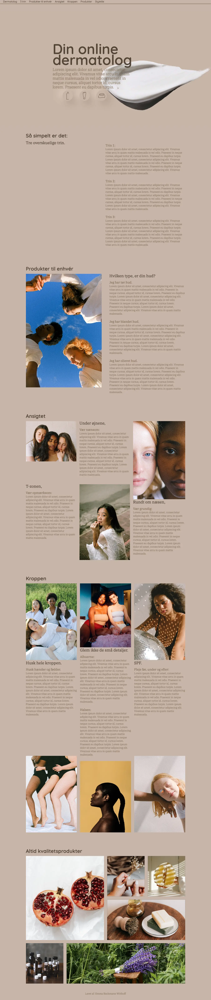

Jeg blev tildelt stilen neumorphism, og analyserede mig frem til, at
det er ui-elementerne der har det største fokus. Stilen er inspireret
er skeumorphism, men mere moderne. Vha. et moodboard fik jeg et godt
overblik over stilens overordnede udseende.
Stilen skulle implementeres i et website, ud fra en fast wireframe,
som illustrerede nogle af konventionerne for web design. Jeg benyttede
oplæggene om farvelære og typografi, til at sammensætte fonte, der
passede til stilen. Jeg valgte monokromatiske farver, testede dem i
Adobe color, og valgte en simpel blød serif font. Jeg forsøgte mig med
ui-elementer, som også fulgte stilen, for at opnå en god rytme i mit
layout.
Det samme gjaldt da mit splashbillede skulle designes.
LinkedIn-Learning og oplæg fra undervisere var nyttige, ift. at få
genopfrisket hvilke redskaber Photoshop kunne byde på.



Den faste wireframe, samt layoutdiagrammet lærte mig, hvor vigtigt det
er at strukturere sit arbejde ordentligt, inden man går i gang. Disse
gav mig gode forudsætninger til senere, hvor jeg selv skulle opbygge
sites fra bunden.
Det er vigtigt at arbejde semantisk når HTML sættes op. Altså bør man
f.eks. undgå at sætte alt indhold ind i én div, men kun dét der giver
mening. Andet kan passe bedre i en section el. fig. Dette er til gavn
for både søgemaskiner og blinde – og en meget vigtig del af kodning.
Jeg lærte desuden hvordan CSS bør bruges, til at style min HTML. Grid
og box-modellen blev nyttige værktøjer, til at opsætte mit indhold så
det passede på den udleverede wireframe.
Jeg benyttede også min viden om gestaltlove, til at holde elementer
sammen. Overskrifter der hører sammen med en bestemt tekst eller
billede – bør stå nær hinanden. Det er nemmere for øjet.
Websitet skulle være responsivt, og derfor introduceredes vi for media
queries. Et svært ord, men et super redskab til at placere design,
afhængigt af viewporten.
Jeg lærte hurtigt, at trække på mine medstuderende til hjælp, samt at
helt gyldig hjælp sagtens kan findes på nettet.
Med de rette søgninger fik jeg f.eks. opfrisket hvordan man sætter en
rundet border på en kasse, eller brugt developer tools til at rette
mit grid – så det blev som ønsket.
